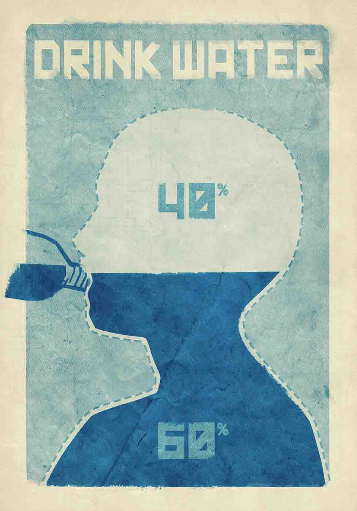

Water is actually a nutrient. Our bodies need water replenished throughout the day to replace the large amount lost to vital functions.
Fluid needs, like energy needs, increase when we are active or outdoor temperatures are high.
High-fructose and sugared drinks make us gain weight and crave sweets. Water is the best thirst quencher.
An 8-ounce glass of water near your bed at night will remind you to start the day with what you cannot live without.
Drink up.
